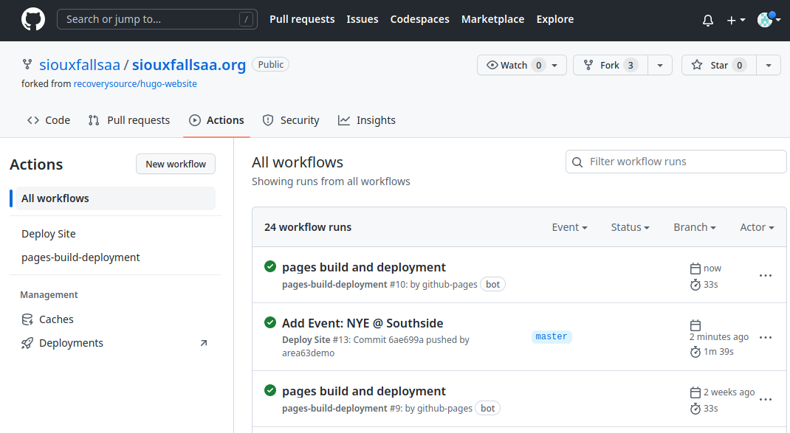

Update Event Page¶
Reference basic page updates
Reference Markdown syntax guide
Show examples of links to documents
Explain changing the link to an embedded resource
Tutorial: Create a new event with an embedded “flyer” (pdf)
Create an Event¶
To create an event:
Navigate to your project:

Select
content, thenevents:
The easiest way to proceed is to copy/paste an existing or example document:

Select the chosen source document and click the
Display the source blobbutton:Highlight the document and “copy”. If this is challenging, the
Rawbutton will provide a “plain text” version that is easier to use.
Back in the
eventsdirectory, chooseAdd file > Create new file:
Paste the starting file contents into the large box and provide a filename above.
Note
This filename should NOT include spaces, keep it simple with numbers,
lowercase letters, hyphens, and underscores. The filename MUST end with
.md.
Update the content as appropriate and provide a short explanation of the change that is being made:

After clicking the
commitbutton, you can clickActionsto observe the website update “build” process:Once complete, green checkmarks will be displayed:

Your changes will now be available for the world to view: